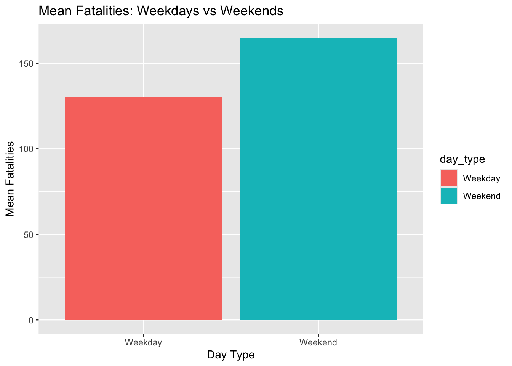

Homework 01
TidyTuesday Section
Explore the week’s TidyTuesday challenge. Develop a research question, then answer it through a short data story with effective visualization(s). Provide sufficient background for readers to grasp your narrative.
Reasearch Question : How are holidays/weekends related to fatal car crashes in the united states?
Reading in Data
Mutating day
Code
date fatalities_count day
1 1992-01-01 144 Wednesday
2 1992-01-02 111 Thursday
3 1992-01-07 85 Tuesday
4 1992-01-12 127 Sunday
5 1992-01-03 182 Friday
6 1992-01-17 130 FridayDividing it into weekends/Holidays and non-weekends and comparing it against fatality then ggplotting and seeing what we can figure out
Code
# Lets filter out the weekends and holidays
# filter it must be true or false, you can't just give a value or column
# %in% its same as in of python - basically saying : " its in there "
# if I data is passed through pipe, i don't need to pass again in ggplot
daily_AccApril_22 %>%
filter(fatalities_count > 0, daily_AccApril_22$day %in% c ("Saturday", "Sunday")) %>%
ggplot(aes(x = day, y = fatalities_count)) +
geom_col(color = "red") + theme_classic()Numeric Summary
Code
# Getting a numeric summary of the plot
# grouping by day so that we can get a summary of weekends (saturday and sunday combined)
# %>% -- its essentially saying and then everything that occured before is passed we don't need to create specific column if we have filtered it and piped it
weekend_fatalities <- daily_AccApril_22 %>%
filter(fatalities_count > 0, daily_AccApril_22$day %in% c ("Saturday", "Sunday")) %>%
group_by(day) %>%
summarise(total_fatalities = sum(fatalities_count),
mean_fatalities = mean(fatalities_count),
median_fatalities = median(fatalities_count),
n_records = n())
weekend_fatalities# A tibble: 2 × 5
day total_fatalities mean_fatalities median_fatalities n_records
<chr> <int> <dbl> <dbl> <int>
1 Saturday 232803 178. 179 1305
2 Sunday 198294 152. 153 1304##Lets compare the fatalities of weekdays and get a summary
Lets get a numeric summary
Code
weekdays_fatalities <-daily_AccApril_22 %>%
filter(fatalities_count > 0, daily_AccApril_22$day %in% c ("Monday", "Tuesday", "Wednesday", "Thursday", "Friday")) %>%
group_by(day) %>%
summarise(total_fatalities = sum(fatalities_count),
mean_fatalities = mean(fatalities_count),
median_fatalities = median(fatalities_count),
n_records = n())
weekdays_fatalities# A tibble: 5 × 5
day total_fatalities mean_fatalities median_fatalities n_records
<chr> <int> <dbl> <dbl> <int>
1 Friday 214731 165. 165 1305
2 Monday 168534 129. 128 1304
3 Thursday 177366 136. 135 1305
4 Tuesday 164099 126. 125 1304
5 Wednesday 169007 130. 129 1305ggploting weekday vs weekend
Code
# Cool, it shows that means fatalities is highest on Saturday,friday and sunday -- Lets plot mean fatalities of whole week and take mean of sunday, saturday and friday fatalities and compare with Monday, tuesday, Wednesday and thurday fatalities
# ggplot distinctly assigns color from its default color palette for fill = day type
# ifelse - if day in c (sunday/saturday), call it weekends or else call it a weekday
allWeek_mean_fatalities <- daily_AccApril_22 %>%
mutate(day_type = ifelse(day %in% c("Saturday", "Sunday"), "Weekend", "Weekday")) %>%
group_by(day_type) %>%
summarise(mean_fatalities = mean(fatalities_count, na.rm = TRUE))
allWeek_mean_fatalities# A tibble: 2 × 2
day_type mean_fatalities
<chr> <dbl>
1 Weekday 137.
2 Weekend 165.Code
Including fridays as weekends
####(Because most people do start their weekend on friday evening’s once work is done, so they drive and and are super excited)
Code
# A tibble: 2 × 2
day_type mean_fatalities
<chr> <dbl>
1 Weekday 130.
2 Weekend 165.Code

Conclusion
Conclusion : The data does support the Research question showing that on average there’s 28 more fatalities due to car accidents on weekends than weekdays in the US history from 1992 to 2016. Additionally, due to nature of car accidents I have added friday to weekends as more people see Friday evening as the beginning of weekens and as per the analysis on average if we combine Friday, Saturday and Sunday there 35 more fatalities due to car accidents on weekends than weekdays in the US history from 1992 to 2016.
Data source/refrence : https://github.com/rfordatascience/tidytuesday/blob/main/data/2025/2025-04-22/readme.md|
#Tidy Tuesday